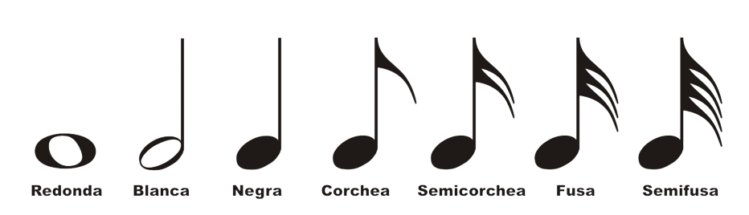
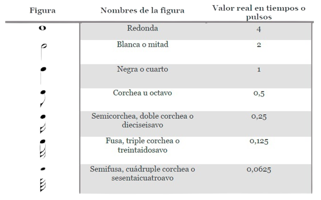
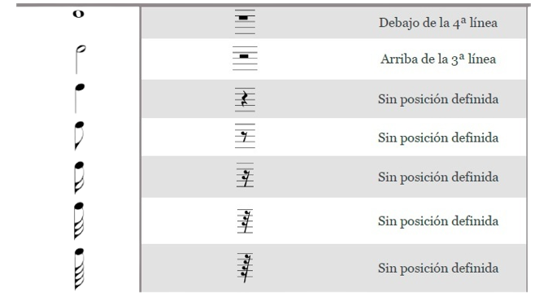

¿Cuales son las figuras ritmicas?
Vamos con: Las figuras musicales, estas son las que marcan la duración de una nota. Cada figura rítmica indica una duración específica, y según la figura utilizada, se puede determinar la cantidad de tiempo que debe durar una nota en relación con las demás notas de la pieza.
En el ámbito musical, existen diversas figuras rítmicas que se utilizan para representar la duración de los sonidos. Algunas de estas figuras son la redonda, la blanca, la negra, la corchea, la semicorchea, la fusa y la semifusa. Dependiendo de la figura, se les puede llamar también enteros, medios, cuartos, octavos, dieciseisavos, treintaidosavos, entre otros. En la siguiente tabla encontrarás la figura y su duración.
La redonda es una figura musical que se utiliza para representar la duración más larga de todas, independientemente de la velocidad del tempo. En muchos casos, se utiliza como unidad de medida en la música, y se le asigna el valor de 1. La redonda se representa mediante una cabeza de nota vacía, sin rellenar su interior.
La blanca es una figura musical que se utiliza para representar una duración menor que la de la redonda, equivalente a la mitad de su duración. En otras palabras, dos blancas equivalen a una redonda. Se representa con una cabeza de nota sin rellenar, unida a una plica.
La negra es una figura musical que representa una duración aún más corta que la blanca, equivalente a la mitad de su duración. En otras palabras, cuatro negras equivalen a una redonda. La negra se representa mediante una cabeza de nota completa unida a una plica.
La corchea es una figura musical que representa una duración aún más corta que la negra, equivalente a la mitad de su duración. En otras palabras, ocho corcheas equivalen a una redonda. La corchea se representa mediante una cabeza de nota completa unida a una plica y a una bandera.
La semicorchea es una figura musical que representa una duración aún más corta que la corchea, equivalente a la mitad de su duración. En otras palabras, dieciséis semicorcheas equivalen a una redonda. La semicorchea se representa mediante una cabeza de nota completa unida a una plica y a dos banderas.
La fusa es una figura musical que representa una duración aún más corta que la semicorchea, equivalente a la mitad de su duración. En otras palabras, treinta y dos fusas equivalen a una redonda. La fusa se representa mediante una cabeza de nota completa unida a una plica y a tres banderas.
La semifusa es la figura musical más corta y rápida utilizada en notación musical, representando una duración equivalente a la mitad de una fusa. En otras palabras, sesenta y cuatro semifusas equivalen a una redonda. La semifusa se representa mediante una cabeza de nota completa unida a una plica y a cuatro banderas.
Cada una de las figuras musicales que hemos mencionado tiene su correspondiente silencio, que se utiliza para indicar una pausa en la música sin alterar la duración de las notas que la preceden o la siguen. Los silencios tienen la misma duración que sus notas musicales equivalentes. Por lo tanto, existen silencios de redonda, blanca, negra, corchea, semicorchea, fusa y semifusa. El silencio se representa mediante una figura similar a la nota musical correspondiente, pero en lugar de estar rellena, se dibuja en blanco o con un contorno de trazos.
